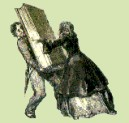

|

Sac. Enrico
Villa
San Matroniano
nella leggenda
e nella storia
Documenti e note critiche
Milano
Basilica dei SS. Apostoli
e Nazaro Maggiore
1942-XX
|
|
La
via dei trionfi
Gettando uno sguardo su di una qualsiasi pianta topografica di Milano,
al centro di essa balza all'occhio un agglomerato di case rannicchiate
attorno ad un edificio centrale, il Duomo, circoscritte da una fitta rete
di contrade, che si intersicano in ogni senso, racchiuse come in un anello;
ampio cerchio di qualche chilometro di diametro.
E' la ormai chiamata ex Cerchia del Naviglio, che per anni fu la più
importante via di comunicazione fluviale tra Milano, la città del
traffico ed i dintorni, e che seguì il tracciato del noto Fossato
della città medievale già prima linea di difesa esterna
della città romana.
Tracciato carico di storia, che ridirà ai Milanesi, pur nel mutare
continuo del suo aspetto esteriore, gli eventi di una città due
volte millenaria e più.
Il pio Romeo dell'VIII sec. Deve averla percorsa mentre peregrinava di
basilica in basilica visitando e venerando i Corpi Santi della città,
con la sua stessa fede possiamo percorrerla ancor noi.
Non è forse la Cerchia del Naviglio come una regale corona che
recinge il massimo tempio della Chiesa Milanese: il Duomo, costruito in
parte su quel terreno che già sostenne la "Basilica Nova"
ed i suoi Battisteri?
San Lorenzo e le costruzioni annesse, Sant'Eustorgio, Sant'Ambrogio ed
i chiostri bramanteschi, San Vittore, il Monastero Maggiore, Santa Maria
delle Grazie ed i chiostri, San Simpliciano, l'Incoronata, San Marco,
San Babila, Santa Maria della Passione, San Pietro in Gessate, Santo Stefano,
Santa Maria della Pace, l'Ospedale Sforzesco, la Basilica degli Apostoli
e San Nazaro, San Calimero, Santa Eufemia sono tanti gioielli che brillano
anche per recenti e provvidenziali restauri per la maggior parte ultimati,
per altri ancora in corso o agli inizi, così la Cerchia del naviglio
diverrà la via dei trionfi della fede cattolica del generoso popolo
ambrosiano.
Se di questa via dei trionfi fosse possibile trovare un punto d'interruzione
per determinare l'inizio ed il termine, lo si deve segnare là dove
la Via porticata l'intersica o la lambisce, non lungi dall'Arco di trionfo
o Arco Romano in corrispondenza dell'antico chiostro di san Nazaro. Precisamente,
per comprenderci, ov'era il ponte sul Naviglio del Corso di Porta Romana;
l'attuale incrocio tra Corso Roma, via Fr. Sforza e via Santa Sofia.
In questo punto ha inizio e termine la Via dei Trionfi. Inizia quindi,
e per chi esce dalla città, alla destra della Via Porticata, con
una imponente costruzione imperiale della prima metà del IV sec.:
la Basilica di san Lorenzo, eretta a trionfo del Cristianesimo sul mondo
pagano dopo il noto editto del 313.
Termina con un'altra costruzione posta alla sinistra della Via Porticata
della seconda metà del sec.IV, non più costruzione imperiale
bensì prettamente ambrosiana: la Basilica Apostolorum eretta nel
382 a segno di vittoria della fede cattolica riportata sopra la tenace
eresia Ariana.
Non a caso Ambrogio scelse questo lembo di terra per erigervi la sua basilica,
la "Romana", e non a caso la pose a ridosso della Via Porticata,
che segnava l'inizio della via che conduceva a Roma, e la volle nel punto
di mezzo tra le mura di Massimiano e l'Arco di Trionfo od Arco Romano,
quasi a simboleggiare che questa fulgida gemma incastonata nell'aura e
gemmata corona è anello di congiunzione tra la Basilica Nova e
la Basilica Petriana, centro della cattolicità e della romanità.
Quanto si sta compiendo da uomini capaci per ridare splendore alla Basilica
degli Apostoli col restauro in corso, colla sistemazione delle immediate
adiacenze, col condurre studi conforme i dati archeologici divulgandone
i risultati, è fatica grandemente meritevole d'approvazione e di
aiuti.
A Matroniano, eremita e santo, affidiamo il compito di ottenere per questo
lavoro, che si sta conducendo in rettitudine e bontà, le Benedizioni
Divine.
|
|
|